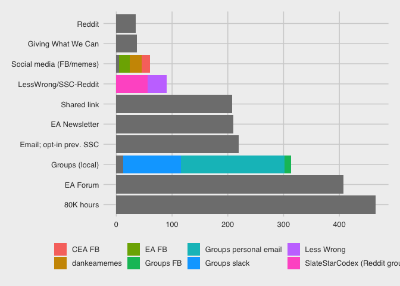
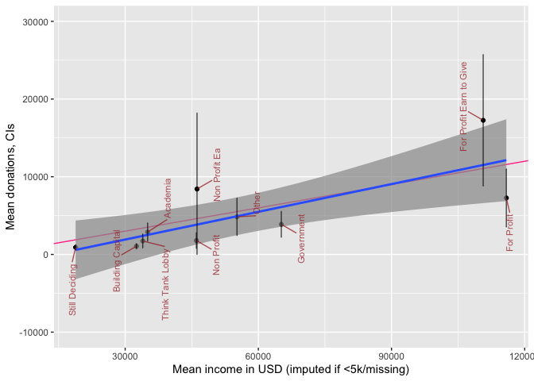

3 Demographics: considering representativeness
#key binary/numeric demographics for summary comparisons
key_demog <- c("age_approx", "d_male", "d_student", "race_white", "d_live_usa", "income_k_c", "career_academia")
key_demog_plus <- c(key_demog, "engagement_num")
key_demog_cat <- key_demog_plus
key_outcomes <- c(key_demog_plus, "mn_priority_lt_rating", "lt_top_priority", "animal_top_priority", "don_share_inc_19_imp")#DR: usually I don't do this but perhaps it makes the code more readable?
attach(eas_20)See previous section: Methods: Weighting, representativeness, and sensitivity testing
Recapping that discussion:
In measuring the demographics of “the global population of those who identify with Effective Altruism” see ‘size of EA’ post here we face:
high non-response/non-participation rates, which likely vary by groups and sub-groups,
a hidden/rare and fluctuating population,
no guarantee that we have complete ‘coverage’ of relevant groups,
and we have few or no benchmarks (e.g., no complete enumeration of the population of interest).
This makes it difficult to be highly confident in the representativeness of the demographics reported in this post (or even in the year-to-year changes, as response rates).
We present this sensitivity testing below.
3.1 Sensitivity checks
Following the previous discussion on the unique issues faced by the EA survey, we present a series of sensitivity checks. (Why these groupings? See discussion above.)
As noted above, these bounds are clearly overly wide, i.e., overly conservative, at least in considering the impact of over/under-sampling from each referrer and from each ‘willingness to respond’ group.
Demographics by ‘referrer’
Respondents come to this survey from a range of ‘referrers’; we can track these links. The table and bar chart below breaks this down:
cap <- "Referrer"
(
refer_tab <- eas_20 %>%
tabyl(referrer_cat) %>%
arrange(-n) %>%
kable(caption=cap) %>%
kable_styling(latex_options = "scale_down")
)| referrer_cat | n | percent |
|---|---|---|
| 80K hours | 465 | 0.2261673 |
| EA Forum | 407 | 0.1979572 |
| Groups (local) | 313 | 0.1522374 |
| Email; opt-in from prev. EAS | 219 | 0.1065175 |
| EA Newsletter | 210 | 0.1021401 |
| Shared link | 208 | 0.1011673 |
| Less Wrong or SlateStarCodex-Reddit | 90 | 0.0437743 |
| Social media (FB/memes) | 60 | 0.0291829 |
| Giving What We Can | 37 | 0.0179961 |
| 35 | 0.0170233 | |
| Other | 12 | 0.0058366 |
library(viridis)## Error in library(viridis): there is no package called 'viridis'(
referrer_bar <- eas_20 %>%
filter(referrer_cat!="Other") %>%
mutate(
referrer_sub = case_when(
str_detect(referrer, "Groups") ~ as.factor(referrer),
str_detect(referrer, "dankeamemes|EA FB|CEA FB|Hangouts") ~ as.factor(referrer),
str_detect(referrer, "Less Wrong|Slate") ~ as.factor(referrer),
TRUE ~ as.factor("")),
) %>%
ggplot() +
aes(x = forcats::fct_infreq(referrer_cat), fill = referrer_sub) +
geom_bar(stat="count") +
scale_fill_hue() +
coord_flip() +
ggthemes::theme_fivethirtyeight() +
scale_x_discrete(labels=c("Less Wrong or SlateStarCodex-Reddit"="LessWrong/SSC-Reddit",
"Email; opt-in from prev. EAS"="Email; opt-in prev. SSC"))+
guides(fill=guide_legend(title=NULL)) +
theme(legend.position = "bottom")
)
Plotly interactive version:
ggplotly(referrer_bar)Note on statistics (unfold):
I include standard deviation for all nonbinary variables the SD for binary variables doesn’t provide any additional information so I never put this in. (The SD for any binary variable is simply a function of the shares in each category), I do not show the standard error or confidence intervals in these tables because I do not want to suggest “testing for differences in outcome” by these splits. The point here isn’t to show ’look there are no significant differences”; of course there are. The point is “let’s consider what the range might be for the true mean or median of these outcomes”, if we allow that we may be over or under-representing groups along these observable lines.
As part of this exercise, I could have also reported confidence intervals for the largest and smallest value of each measure across all subgroups, but this would not add much value in my opinion. We can be pretty sure these extreme values are already overly wide. A more involved take on this would do better to quantify our uncertainty:
- uncertainty due to standard ‘sampling error’ (any sample is only a draw from the population and may get averages wrong ‘by change’), as well as
- uncertainty over differential rates of non-response for groups with different ‘outcome variables’.
I sketch what that might look like very roughly here.
Below, we report ‘engagement by referrer’ (with non-responses dropped, and 4 ‘other referrers’ dropped), i.e., ‘how engaged are those coming from each referrer’. This depiction also shows the relative magnitudes of each grouping and subgrouping, allowing us to consider ‘where the action is’.
(
engage_by_ref <-
eas_20 %>%
filter(referrer_cat!="Other") %>%
filter(!is.na(engagement)) %>%
ggplot() +
aes(x = forcats::fct_infreq(referrer_cat), fill = engagement) +
geom_bar() +
coord_flip() +
scale_fill_brewer() +
theme_minimal() +
guides(fill=guide_legend(title="Self reported EA engagement level")) +
labs(title="Engagement by Referrer (2020)", x = "Referrer")
)
#TODO: add an 'overall' bar to this; put NA's as 'zeroes', i.e., the bar to the left.
#TODO: try to preserve colors for each org (or for engagement?) across graphs -- see http://www.cookbook-r.com/Graphs/Colors_(ggplot2)/ 'use and reuse pallettes'
Next we consider referrer by engagement; i.e., the ‘referrer composition’ and size of each engagment group.
(Again, a few ‘other referrers’ are dropped.)
(
ref_by_engage <-
eas_20 %>%
filter(referrer_cat!="Other") %>%
ggplot() +
aes(engagement, fill = referrer_cat) +
geom_bar() +
coord_flip() +
scale_fill_hue() +
theme_minimal() +
guides(fill=guide_legend(title="Referrer (groupings)")) +
labs(title="Referrer by Engagment (2020)", x = "Self-reported level of engagement")
)
The table below considers how the key ‘demographics’ (as well as engagement) of EAS participants varied by referrer.
Characteristics by referrer - table
(Note: 12 ‘other referrers’ are dropped.)
label_list <- list(age_approx ~ "Age",
d_male ~ "Male",
d_student ~ "Student",
race_white ~ "White (ethnicity)",
d_live_usa ~ "USA-based",
income_k_c ~ "Income in $1000",
career_academia ~ "Academic current career",
mn_priority_lt_rating ~ "Mean prioritization LT (1-5)",
lt_top_priority ~ "LT cause(s) highest",
animal_top_priority ~ "Animal welfare highest",
don_share_inc_19_imp ~ "Donation as share of income, with imputation",
engagement_num ~ "Engagement (1-5 scale)"
)
(
demo_tab_ref <- eas_20 %>%
filter(referrer_cat!="Other") %>%
mutate(referrer_cat = as.factor(referrer_cat),
referrer_cat= fct_drop(referrer_cat),
) %>%
select(all_of(key_outcomes), referrer_cat) %>%
tbl_summary(
by = referrer_cat,
type = c(all_continuous(), engagement_num, mn_priority_lt_rating, don_share_inc_19_imp) ~ "continuous2",
statistic = list(all_continuous() ~ c("{median}",
"{p10}-{p90}",
"{mean} ({sd})"),
all_dichotomous() ~ "{p}%"),
label = label_list,
missing = c("no"),
digits = list(engagement_num ~ 1, mn_priority_lt_rating ~1)
) %>%
modify_footnote(
update = all_stat_cols() ~ "* 'Age' imputed as current year minus birth-year; a few 'other referrer' responses dropped; 'Mean prioritization LT' averages priority assigned to X-risk, AI risks, Biosecurity, Nuclear, and broad-LT-ism'; 'LT causes highest' indicates that one of these causes was among those the individual ranked most-highly. (Same for 'Animal welfare highest')"
) %>%
bold_labels() %>% add_n() %>% add_overall()
)| Characteristic | N | Overall, N = 2,0441 | 80K hours, N = 4652 | EA Forum, N = 4072 | EA Newsletter, N = 2102 | Email; opt-in from prev. EAS, N = 2192 | Giving What We Can, N = 372 | Groups (local), N = 3132 | Less Wrong or SlateStarCodex-Reddit, N = 902 | Reddit, N = 352 | Shared link, N = 2082 | Social media (FB/memes), N = 602 |
|---|---|---|---|---|---|---|---|---|---|---|---|---|
| Age | 1,598 | |||||||||||
| Median | 27 | 29 | 26 | 30 | 29 | 31 | 26 | 28 | 30 | 28 | 28 | |
| 10%-90% | 21-40 | 21-48 | 20-33 | 22-53 | 22-40 | 23-37 | 20-38 | 22-41 | 24-41 | 21-38 | 21-35 | |
| Mean (SD) | 30 (10) | 32 (11) | 27 (6) | 34 (14) | 31 (9) | 30 (5) | 28 (8) | 31 (10) | 31 (10) | 29 (9) | 27 (7) | |
| Male | 1,568 | 71% | 70% | 73% | 70% | 83% | 73% | 63% | 84% | 73% | 59% | 72% |
| Student | 1,628 | 37% | 33% | 44% | 27% | 29% | 17% | 51% | 31% | 23% | 37% | 35% |
| White (ethnicity) | 1,595 | 83% | 84% | 82% | 86% | 88% | 79% | 76% | 85% | 77% | 85% | 81% |
| USA-based | 1,600 | 39% | 45% | 41% | 45% | 36% | 43% | 22% | 65% | 62% | 32% | 40% |
| Income in $1000 | 1,403 | |||||||||||
| Median | 33 | 33 | 30 | 44 | 41 | 55 | 14 | 49 | 80 | 35 | 22 | |
| 10%-90% | 1-130 | 0-109 | 1-114 | 5-161 | 3-144 | 8-152 | 0-80 | 7-191 | 5-214 | 4-94 | 3-126 | |
| Mean (SD) | 61 (138) | 49 (76) | 65 (202) | 72 (98) | 63 (81) | 72 (75) | 47 (135) | 105 (229) | 105 (149) | 44 (42) | 82 (235) | |
| Academic current career | 1,616 | 18% | 22% | 17% | 16% | 18% | 17% | 19% | 15% | 14% | 14% | 29% |
| Engagement (1-5 scale) | 1,823 | |||||||||||
| Median | 3.0 | 3.0 | 4.0 | 3.0 | 4.0 | 3.0 | 4.0 | 2.0 | 3.0 | 4.0 | 4.0 | |
| 10%-90% | 2.0-5.0 | 2.0-4.0 | 3.0-5.0 | 2.0-4.0 | 2.0-5.0 | 2.0-4.4 | 2.0-5.0 | 2.0-4.0 | 2.0-4.0 | 2.0-5.0 | 2.0-5.0 | |
| Mean (SD) | 3.4 (1.1) | 2.9 (1.1) | 4.0 (1.0) | 3.1 (0.9) | 3.6 (1.0) | 3.3 (1.0) | 3.6 (0.9) | 2.6 (0.9) | 2.8 (1.1) | 3.5 (1.0) | 3.6 (1.0) | |
| Mean prioritization LT (1-5) | 1,578 | |||||||||||
| Median | 3.4 | 3.2 | 3.4 | 3.2 | 3.4 | 2.8 | 3.4 | 3.0 | 3.0 | 3.4 | 3.2 | |
| 10%-90% | 2.3-4.0 | 2.2-4.2 | 2.6-4.2 | 2.2-4.0 | 2.2-4.0 | 1.8-3.8 | 2.5-4.2 | 2.0-3.9 | 2.0-3.8 | 2.4-4.2 | 2.5-4.0 | |
| Mean (SD) | 3.3 (0.7) | 3.3 (0.7) | 3.4 (0.6) | 3.2 (0.7) | 3.2 (0.7) | 2.7 (0.8) | 3.4 (0.7) | 2.9 (0.8) | 2.9 (0.7) | 3.3 (0.7) | 3.3 (0.6) | |
| LT cause(s) highest | 1,608 | 51% | 50% | 57% | 50% | 49% | 25% | 51% | 46% | 45% | 48% | 56% |
| Animal welfare highest | 1,542 | 19% | 15% | 20% | 19% | 20% | 19% | 20% | 7.8% | 20% | 17% | 31% |
| Donation as share of income, with imputation | 1,416 | |||||||||||
| Median | 0.02 | 0.02 | 0.02 | 0.02 | 0.05 | 0.07 | 0.02 | 0.01 | 0.02 | 0.02 | 0.03 | |
| 10%-90% | 0.00-0.14 | 0.00-0.11 | 0.00-0.15 | 0.00-0.12 | 0.00-0.21 | 0.00-0.18 | 0.00-0.20 | 0.00-0.11 | 0.00-0.12 | 0.00-0.12 | 0.00-0.10 | |
| Mean (SD) | 0.12 (1.79) | 0.09 (0.48) | 0.07 (0.14) | 0.07 (0.14) | 0.09 (0.16) | 0.09 (0.12) | 0.08 (0.19) | 0.03 (0.05) | 0.10 (0.22) | 0.48 (5.31) | 0.05 (0.08) | |
|
1
c("Median", "10%-90%", "Mean (SD)"); %
2
|
||||||||||||
#work on putting in standard errors -- not succesful
tbl_se_work <-
demo_tab_ref$meta_data %>%
select(summary_type, var_label, df_stats) %>%
tidyr::unnest(df_stats) %>%
mutate(
se = case_when(
summary_type %in% c("categorical", "dichotomous") ~ (sqrt(p * (1 - p) / N_nonmiss)),
summary_type %in% c("continuous2") ~ (sd / sqrt(N_nonmiss))
),
label = coalesce(variable_levels, var_label),
row_type = ifelse(summary_type == "dichotomous", "label", "level")
) %>%
select(variable, row_type, label, se)As noted previously I do not show the standard error or confidence intervals in these tables because I do not want to suggest “testing for differences in outcome” by these splits; we are focusing on sensitivity testing. Nonetheless, I present estimated standard errors below, to put the differences in context.
transpose_ok <- function(df) {
df %>%
t %>%
row_to_names(row_number = 1) %>%
kable(format='html',
digits=2,
row.names=TRUE,
align='cccccc',
escape = FALSE,
caption = "Standard errors of means; for smallest and largest groups")
}
hi_low_groups <- function(df) {
df %>%
mutate(count = n()) %>%
ungroup() %>%
filter(count==min(count) | count==max(count)) %>%
select(-count) }
eas_20 %>%
select(all_of(key_outcomes), referrer_cat) %>%
filter(referrer_cat!="Other") %>%
group_by(referrer_cat) %>%
hi_low_groups %>%
group_by(referrer_cat) %>%
summarise(across(everything(), list(se = ~sd(.x, na.rm=TRUE)/sqrt(length(.x))))) %>%
transpose_ok| 80K hours | ||
|---|---|---|
| age_approx_se | 0.5279542 | 1.6443904 |
| d_male_se | 0.02129446 | 0.07705141 |
| d_student_se | 0.02189632 | 0.07250275 |
| race_white_se | 0.01690748 | 0.07250275 |
| d_live_usa_se | 0.02310065 | 0.08411201 |
| income_k_c_se | 3.504822 | 25.105259 |
| career_academia_se | 0.01910471 | 0.06060915 |
| engagement_num_se | 0.04875888 | 0.18215302 |
| mn_priority_lt_rating_se | 0.03429825 | 0.11709040 |
| lt_top_priority_se | 0.02322443 | 0.08614610 |
| animal_top_priority_se | 0.01666554 | 0.06936880 |
| don_share_inc_19_imp_se | 0.02216159 | 0.03788806 |
Some relevant outcomes are fairly constant across major referrers, such as age, (White) ethnicity, and being in an academic career. About half of those coming from all referrers rank a long-term cause at least as highly as any other non-LT cause (with the notable exception of GWWC). Other outcomes show more substantial variation. E.g., those opting-in from the previous EAS are substantially more male than those who were given a shared link. (Those referred from) the ‘rationalist groups’ (LW, SSC) are also a bit more male than the average, while those referred from ‘local groups’ are somewhat more female. Local groups also contain more students, a much lower share based in the US, and lower-earners, on average.
Considering attitudes and behaviors, those referred from rationalist groups are the least engaged on average, while those from EA-Forum are the most-engaged. Similar patterns hold for the response to (absolute, not relative) prioritization of the aggregated long-term cause categories. LW/SSC also appear less likely to prioritize animal welfare, while those coming from Social Media (Dank EA Memes, EA FB, CEA FB, and Hangouts) tend to prioritize this more. Median donations as share of (imputed-where-missing) income is fairly constant around 2% across most referrers at around 2%, although it appears substantially higher for email-opt-ins and GWWC-referrals, and potentially somewhat lower for the rationalist groups.
What does this tell us about the sensitivity of our results to under- or over-representation of particular referrers?. Some results are not particularly sensitive – for example,“EA’s tend to be young” across all groups of referrers.
Demographics by willingness-to-respond to future surveys and by lateness of response
We repeat the previous summary statistics by ‘willingness to respond in future’, divided into
- those who did not wish to be contacted again for another EAS in future
- those willing to be contacted again for another EAS but not for additional relevant surveys
- those willing to be contacted again for another EAS as well as additional surveys
(
demo_tab_wtr <- eas_20 %>%
mutate(survey_willing = as.factor(survey_willing),
survey_willing= fct_rev(survey_willing)
) %>%
select(all_of(key_outcomes), survey_willing) %>%
tbl_summary(
by = survey_willing,
type = c(all_continuous(), engagement_num, mn_priority_lt_rating, don_share_inc_19_imp) ~ "continuous2",
statistic = list(all_continuous() ~ c("{median}",
"{mean} ({sd})"),
all_dichotomous() ~ "{p}%"),
label = label_list,
missing = c("no"),
digits = list(engagement_num ~ 1, mn_priority_lt_rating ~1)
) %>%
modify_footnote(
update = all_stat_cols() ~ "'Prioritize LT' averages priority assigned to X-risk, AI risks, Biosecurity, Nuclear, and broad-LT-ism'") %>%
bold_labels() %>% add_n() %>% add_overall()
)| Characteristic | N | Overall, N = 2,0561 | No next EAS, N = 7992 | Next EAS only, N = 4522 | Next EAS and followup surveys, N = 8052 |
|---|---|---|---|---|---|
| Age | 1,605 | ||||
| Median | 27 | 28 | 27 | 28 | |
| Mean (SD) | 30 (10) | 31 (12) | 29 (9) | 30 (9) | |
| Male | 1,575 | 71% | 60% | 75% | 73% |
| Student | 1,636 | 37% | 37% | 39% | 35% |
| White (ethnicity) | 1,602 | 83% | 81% | 84% | 83% |
| USA-based | 1,607 | 39% | 40% | 36% | 39% |
| Income in $1000 | 1,409 | ||||
| Median | 33 | 36 | 35 | 31 | |
| Mean (SD) | 61 (137) | 72 (210) | 58 (128) | 56 (94) | |
| Academic current career | 1,624 | 18% | 17% | 20% | 18% |
| Engagement (1-5 scale) | 1,834 | ||||
| Median | 3.0 | 3.0 | 3.0 | 4.0 | |
| Mean (SD) | 3.4 (1.1) | 3.0 (1.1) | 3.5 (1.0) | 3.7 (1.0) | |
| Mean prioritization LT (1-5) | 1,586 | ||||
| Median | 3.4 | 3.2 | 3.4 | 3.4 | |
| Mean (SD) | 3.3 (0.7) | 3.2 (0.7) | 3.3 (0.7) | 3.3 (0.7) | |
| LT cause(s) highest | 1,616 | 51% | 46% | 51% | 53% |
| Animal welfare highest | 1,550 | 19% | 16% | 18% | 20% |
| Donation as share of income, with imputation | 1,422 | ||||
| Median | 0.02 | 0.02 | 0.02 | 0.03 | |
| Mean (SD) | 0.12 (1.78) | 0.06 (0.13) | 0.06 (0.13) | 0.18 (2.53) | |
|
1
c("Median", "Mean (SD)"); %
2
'Prioritize LT' averages priority assigned to X-risk, AI risks, Biosecurity, Nuclear, and broad-LT-ism'
|
|||||
In the above table age, student status, (White) ethnicity, academic career, and ‘prioritizing animal welfare most highly’ appear not strongly related to willingness to participate in future surveys. Those least willing to participate are slightly less male, substantially less US-based, slightly-higher earners, (predictably) a bit less-engaged, very slightly less long-termist, and they donate slightly less. Those most willing to take future surveys (EAS and followups) tend to be highly-engaged, and donate somewhat more.
Again, presenting standard errors below to put these differences in context:
eas_20 %>%
mutate(survey_willing = as.factor(survey_willing),
survey_willing= fct_rev(survey_willing)
) %>%
select(all_of(key_outcomes), survey_willing) %>%
group_by(survey_willing) %>%
hi_low_groups %>%
group_by(survey_willing) %>%
summarise(across(everything(), list(se = ~sd(.x, na.rm=TRUE)/sqrt(length(.x))))) %>%
transpose_ok| Next EAS only | Next EAS and followup surveys | |
|---|---|---|
| age_approx_se | 0.4148638 | 0.3291991 |
| d_male_se | 0.02038997 | 0.01572996 |
| d_student_se | 0.02294615 | 0.01685293 |
| race_white_se | 0.01737497 | 0.01311695 |
| d_live_usa_se | 0.02262448 | 0.01722718 |
| income_k_c_se | 6.043911 | 3.324393 |
| career_academia_se | 0.01888274 | 0.01341166 |
| engagement_num_se | 0.04776964 | 0.03473368 |
| mn_priority_lt_rating_se | 0.03360644 | 0.02411332 |
| lt_top_priority_se | 0.02354177 | 0.01760127 |
| animal_top_priority_se | 0.01816273 | 0.01413515 |
| don_share_inc_19_imp_se | 0.006227659 | 0.089325948 |
By start date (relative to others from same referrer)
Below, the results are meant to be grouped into ‘quarters of the population responding within each referrer’. I.e., is the participant among the earliest 25th percentile, second, third, and latest percentile ‘among those coming from the referrer they came in from.’ *
(
demo_tab_timing <- eas_20 %>%
select(all_of(key_outcomes), start_date_qtl_by_referrer) %>%
tbl_summary(
by = start_date_qtl_by_referrer,
type = c(all_continuous(), engagement_num, mn_priority_lt_rating, don_share_inc_19_imp) ~ "continuous2",
statistic = list(all_continuous() ~ c("{median}",
"{mean} ({sd})"),
all_dichotomous() ~ "{p}%"),
label = label_list,
missing = c("no"),
digits = list(engagement_num ~ 1, mn_priority_lt_rating ~1)
) %>%
modify_spanning_header(c("stat_1", "stat_2", "stat_3", "stat_4") ~ "**Start date vs. others from same referrer**") %>%
bold_labels() %>% add_n() %>% add_overall()
)| Characteristic | N | Overall, N = 2,0561 | Start date vs. others from same referrer | |||
|---|---|---|---|---|---|---|
| [0%, 25%), N = 334 | [25%, 50%], N = 757 | (50%, 75%], N = 577 | (75%, 100%], N = 388 | |||
| Age | 1,605 | |||||
| Median | 27 | 27 | 28 | 28 | 28 | |
| Mean (SD) | 30 (10) | 29 (8) | 30 (11) | 29 (9) | 31 (11) | |
| Male | 1,575 | 71% | 69% | 71% | 71% | 71% |
| Student | 1,636 | 37% | 37% | 37% | 36% | 36% |
| White (ethnicity) | 1,602 | 83% | 84% | 83% | 83% | 83% |
| USA-based | 1,607 | 39% | 39% | 40% | 38% | 37% |
| Income in $1000 | 1,409 | |||||
| Median | 33 | 30 | 33 | 36 | 31 | |
| Mean (SD) | 61 (137) | 67 (206) | 59 (118) | 59 (113) | 61 (120) | |
| Academic current career | 1,624 | 18% | 17% | 20% | 18% | 16% |
| Engagement (1-5 scale) | 1,834 | |||||
| Median | 3.0 | 4.0 | 3.0 | 3.0 | 3.0 | |
| Mean (SD) | 3.4 (1.1) | 3.7 (1.0) | 3.4 (1.1) | 3.4 (1.1) | 3.4 (1.1) | |
| Mean prioritization LT (1-5) | 1,586 | |||||
| Median | 3.4 | 3.2 | 3.4 | 3.2 | 3.4 | |
| Mean (SD) | 3.3 (0.7) | 3.2 (0.7) | 3.3 (0.7) | 3.2 (0.8) | 3.3 (0.7) | |
| LT cause(s) highest | 1,616 | 51% | 50% | 51% | 51% | 51% |
| Animal welfare highest | 1,550 | 19% | 22% | 20% | 18% | 15% |
| Donation as share of income, with imputation | 1,422 | |||||
| Median | 0.02 | 0.03 | 0.03 | 0.02 | 0.01 | |
| Mean (SD) | 0.12 (1.78) | 0.09 (0.19) | 0.07 (0.15) | 0.26 (3.42) | 0.06 (0.14) | |
|
1
c("Median", "Mean (SD)"); %
|
||||||
Looking across the response quartiles relative to others coming from the same referrers, we don’t see any striking differences in age, gender, student-status, (white) ethnicity, income, LT-prioritization, or donations. Those responding latest are slightly less likely to be US-based (perhaps because of time-difference issues). Those responding earliest tend to be the most engaged (unsurprisingly). There also seems to be some positive relationship between promptness and prioritizing animal welfare.
Again, presenting standard errors below to put these differences in context:
eas_20 %>%
select(all_of(key_outcomes), start_date_qtl_by_referrer) %>%
group_by(start_date_qtl_by_referrer) %>%
hi_low_groups %>%
group_by(start_date_qtl_by_referrer) %>%
summarise(across(everything(), list(se = ~sd(.x, na.rm=TRUE)/sqrt(length(.x))))) %>%
transpose_ok|
[0%, 25%) ]” & referrer_cat3==“Forum/Opt-in/Shared/Newsletter” ~ TRUE, start_date_quantiles==“(80%, 100%]” & referrer_cat3!=“Forum/Opt-in/Shared/Newsletter” ~ TRUE, survey_willing==“No next EAS” ~TRUE, TRUE ~ FALSE ), inside_referrer= referrer_cat3==“Forum/Opt-in/Shared/Newsletter”, willing_x_insider = case_when( less_willing & inside_referrer ~ “less willing, inside ref”, less_willing & !inside_referrer ~ “less willing, outside”, !less_willing & inside_referrer ~ “more willing, inside ref”, !less_willing & !inside_referrer ~ “more willing, outside”, ) ) %>% select(all_of(key_outcomes), willing_x_insider, -engagement_num) ( demo_tab_engaged_responsive <- engaged_resp_df %>% tbl_summary( by = willing_x_insider, type = c(all_continuous(), mn_priority_lt_rating, don_share_inc_19_imp) ~ “continuous2”, statistic = list(all_continuous() ~ c(“{median}”, “{mean} ({sd})”), all_dichotomous() ~ “{p}%”), label = label_list[1:11], missing = c(“no”), digits = list(mn_priority_lt_rating ~1) ) %>% modify_spanning_header(c(“stat_1”, “stat_2”,“stat_3”, “stat_4” ) ~ “Willingness measure x ‘inside’ vs ‘outside’ referrers”) %>% modify_footnote( update = all_stat_cols() ~ “‘Inside’ referrers: Forum/Opt-in/Shared link/Newsletter; Willingness measure described above”) %>% bold_labels() %>% add_n() %>% add_overall() ) Again, presenting standard errors below to put these differences in context:
|
|---|